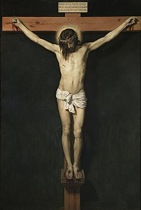

Jesus website
In god we trust
Paranı ver, gönlünü ver, selam ver, canını ver ama sırrını verme!
Günlerini say, kazancını say, büyülerini say ama yerinde sayma!
İşini beğen, aşığını beğen, eşini beğen ama kendini beğenme!
Emek ver, kular ver, bilgi ver ama sakın boş verme!
Fidan büyüt, çocuk eğit, yoksulu besle ama kin besleme!
Davet et, hayret et, ülfet et ama ihanet etme!
Kitap oku, meslek oku, dünyayı oku ama lanet okuma!
Sınıfını geç, hayatını seç, rakibini geç ama gülüp geçme!
Gönül al, dost al, yoldaş al ama beddua alma!
Yaklaş, tanış, konuş, uzaklaş ama uşaklaşma!
Doğrul, sıyrıl, evril, devril ama eğilme!
Hislen, tasalan, seslen, uslan ama paslanma!
İtil, ütül, atık, katıl ama satılma!

For more pictures of the lord